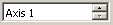
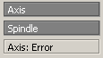
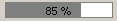
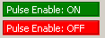
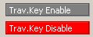
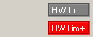

| Grup 1 Axă: |
|
|
|
|  |
Număr axă
Utilizator... |
Folosiți tastele direcționale (săgețile Sus/Jos) de pe tastatură |
Selectați numărul Axei. |
 |
Număr Canal
NC -> PLC |
DBax.DBX68.0 = bit 0
DBax.DBX68.1 = bit 1
DBax.DBX68.2 = bit 2
DBax.DBX68.3 = bit 3
DBax = DB[30 + Număr Axă]
Exemplu: DB31 = Axa 1 |
Alocare canal în NC pentru axa/arbore:
Numărul Canalului NC căruia îi este alocată axa (arborele) (codificare binara).
Info de la NC către PLC. Pentru axele ce sunt alocate în mai mult de 1 canal, acesta este numărul canalului în care este alocată axa în acest moment.
|
 |
Actualizare Canal / Link Channel
Utilizator |
|
Dacă opțiunea 'Act.Chan'/'Link Channel' este selectată, numărul canalului din grupul din stânga va fi setat automat cu numărul canalului în care este alocată axa...
|
|  |
Tip Axă: Axă/Arbore
NC->PLC |
DBax.DBX60.0
DBax = DB[30 + Număr Axă]
Exemplu: DB31 = Axa 1 |
Tip Axă:
0 = Axă
1 = Arbore
În cazul unei erori de citire pentru datele de axă (de exemplu numărul axei este mai mare decât numărul axelor din sistem) aici este afișat mesajul 'Axă: eroare'
|
|  |
Override Axa:
PLC->NC |
DBax.DBB0
DBax.DBB19
DBax = DB[30 + Număr Axă]
Exemplu: DB31 = Axa 1 |
Notă: valoarea afișată pe ecran este calculată conform setărilor 'standard' pentru override în cod Gray
Pentru Axe, valoarea pentru override este setată de către PLC către NC în DBax.DBB0.
Pentru Arbori ('Tip Axa' (DBax.DBX60.0) = 1), valoarea pentru override este setată de către PLC către NC în DBax.DBB19
Valori avans și avans-rapid specifice Canal [ne-implementate în Cam740]:
Pentru valorile de override pentru avans și avans-rapid sunt disponibile în interfața NC/PLC semnale de permitere dedicate și factori de corecție specifici:
DB21, ... DBX6.7 (override avans activ)
DB21, ... DBB4 (valoare override avans)
DB21, ... DBX6.6 (override avans-rapid activ)
DB21, ... DBB5 (valoare override avans-rapid)
Factorii de calcul pentru override pot fi specificați de către PLC fie în format binar fie în cod Gray.
Formatul este setat în NC prin intermediul datelor de mașină:
MD12020 $MN_OVR_FEED_IS_GRAY_CODE (selector override avans contur în cod Gray / path feedrate override switch gray-coded)
MD12040 $MN_OVR_RAPID_IS_GRAY_CODE (selector override avans rapid în cod Gray / rapid traverse override switch gray-coded)
Override avans specific axa / Axis-specific feedrate override
Pentru fiecare axa de poziționare/interpolare, în interfața NC/PLC există un semnal de activare și un octet/byte pentru factorul de override avans.
DB31, ... DBX1.7 (activare override)
DB31, ... DBB0 (valoare override)
Factorii de calcul pentru override pot fi specificați de către PLC fie în format binar fie în cod Gray.
Formatul este setat în NC prin intermediul datei de mașina:
MD12000 $MN_OVR_AX_IS_GRAY_CODE (selector override avans axa în cod Gray / axis feedrate override switch gray-coded)
Pentru codificare binară se aplică următoarea regulă permanentă: DBB0 = 0 => 0% ... DBB0 = 200 => 200%
Pentru codificare în cod Gray, valorile de override corespunzătoare pozițiilor comutatorului rotativ trebuie să fie setate în datele de mașina MD12010 $MN_OVR_ FACTOR_AX_ SPEED [n]
Override Arbore
Pentru fiecare arbore, în interfața NC/PLC există un semnal de activare și un octet/byte pentru factorul de override arbore.
DB31, ... DBX1.7 (activare override)
DB31, ... DBB19 (valoare override arbore)
Factorii de calcul pentru override pot fi specificați de către PLC fie în format binar fie în cod Gray.
Formatul este setat în NC prin intermediul datei de mașină:
MD12060 $MN_OVR_SPIND_IS_GRAY_CODE (selector override arbore în cod Gray / spindle override switch gray-coded)
Pentru codificare binară se aplică următoarea regulă permanentă: DBB19 = 0 => 0% ... DBB0 = 200 => 200%
Pentru codificare în cod Gray, valorile de override corespunzătoare pozițiilor comutatorului rotativ trebuie să fie setate în datele de mașina MD12070 $MN_OVR_FACTOR_SPIND_SPEED [n]
|
|  |
Liber Impuls:
PLC->NC |
DBax.DBX21.7
DBax = DB[30 + Număr Axă]
Exemplu: DB31 = Axa 1 |
Liber Impuls / Pulse enable:
1 = DA: Impulsurile sunt activate/permise pentru actionarea axei. Permiterea pulsurilor are loc in actionare doar cand aceasta semnalizeaza starea de 'gata de functionare' / readiness: DBax.DBX93.5 == 1 (feedback: Drive ready)
0 = NU: Impulsurile sunt dezactivate pentru actionarea axei.
Dacă semnalul 'Liber Impuls' este anulat pe timpul miscarii (de ex. la Stop de Urgenta), axa/actionarea_principala nu mai este franata controlat. Axa se va opri liber pana la staționare.
Corespunzator cu: DBax.DBX93.5 (feedback: Drive ready); DBax.DBX93.7 (feedback: Impulsurile sunt activate / Pulses are enabled)
|
 |
Liber Reglare:
PLC->NC |
DBax.DBX2.1
DBax = DB[30 + Număr Axă]
Exemplu: DB31 = Axa 1 |
Liber Reglare / Controller enable:
1 = DA: Regulatorul este activat.
Bucla de control a poziției este activa (inchisa) iar axa (sau actionarea principala) este controlata in bucla inchisa.
Feedback: DBax.DBX61.5 = 1 (regulator de poziție activ)
Dacă axa a fost referentiata inainte de resetarea acestui semnal, axa nu trebuie sa fie referentiata din nou dupa ce semnalul este setat din nou. Conditie suplimentara: Limita de frecventa a sistemului de masura activ nu trebuie sa fie depasita in acest timp.
Nota
Dacă axa a fost deplasata din poziție cat timp semnalul 'Liber Reglare' nu a fost setat, comportamentul axei la restabilirea semnalului 'Liber Reglare' depinde de semnalul de interfață 'mod urmărire' / 'follow-up mode':
- DBax.DBX1.4 == 1 (mod urmărire / follow-up mode): Bucla de reglare a poziției este implementata din pozitia actuala
- DBax.DBX1.4 == 0 (mod urmărire dezactivat / no follow-up mode): Bucla de reglare a poziției este implementata de la ultima poziție a axei inainte dee resetarea semnalului 'Liber Reglare'
0 = NU: Regulatorul este dezactivat.
Comportamentul la resetarea semnalului 'Liber Reglare' depinde de starea axei in acel moment: stationara sau in miscare:
- Axa/actionare_principala stationara:
- Bucla de control a poziției axei este deschisa (intrerupta).
- In cazul DBax.DBX1.4 == 1 (mod urmărire / follow-up mode) ⇒ prescrisa de poziție = valoarea actuala de poziție
- Semnalul 'Liber reglare' al actionarii axei este resetat
- Urmatoarele semnale de interfață sunt resetate: DBax.DBX61.5 = 0 (regulator de poziție activ); DBax.DBX61.6 = 0 (regulator de viteza activ); DBax.DBX61.7 = 0 (regulator de curent activ)
- Axa/actionarea principala se afla in miscare
- Axa este oprita cu stop rapid.
- Alarma 21612 'Semnal VDI Liber Reglare resetat pe timpul deplasarii' / 'Controller enable VDI signal reset during motion'.
- Bucla de control a poziției axei este deschisa (intrerupta).
- Independent de semnalul de interfață DBax.DBX1.4 (mod urmărire / follow-up mode), prescrisa de poziție este corectata la sfarsitul operatiei de franare(prescrisa poziție = valoare actuala poziție) iar semnalul de reactie DBax.DBX61.3 = 1 (mod urmărire / follow-up mode) este setat.
- Urmatoarele semnale de interfață sunt resetate: DBax.DBX61.5 = 0 (regulator de poziție activ); DBax.DBX61.6 = 0 (regulator de viteza activ); DBax.DBX61.7 = 0 (regulator de curent activ)
|
 |
Stop Avans / Feed Stop:
PLC->NC |
DBax.DBX4.3
DBax = DB[30 + Număr Axă]
Exemplu: DB31 = Axa 1 |
Stop Avans/Arbore, specific axa / Feedrate/spindle stop, axis-specific
0 = NU: Stop Avans/Arbore inactiv.
1 = DA: Stop Avans/Arbore activ.
Axa
- Dacă semnalul de interfață este setat in timpul deplasarii axei, aceasta este franata pana la staționare cu rampa de franare caracteristica. Daa axa se afla in relatie de interpolare cu alte axe, acestea sunt deasemenea franate.
- Dupa ce semnalul de interfață este resetat, deplasarea axei oprite este reluata.
- Controlul poziției este menținut si eroarea de urmărire este anulata.
- Dacă semnalul de interfață este setat si o cerere de deplasare a axei este emisa, axa nu se va deplasa. Totusi, cererea de deplasare este memorata. La resetarea semnalului de interfață, cererea de deplasare este executata imediat si axa se va deplasa.
- Semnalul de interfață este activ in toate modurile de operare.
Arbore (Actionare principala)
- Dacă semnalul de interfață este setat in timpul deplasarii arborelui, aceasta este franat pana la staționare cu rampa de franare caracteristica. Daa arborele se afla in relatie de interpolare cu alti arbori, acestia sunt deasemenea franati.
- Dupa ce semnalul de interfață este resetat, deplasarea/rotirea arborelui oprit este reluata.
- Pe timpul pozitionarii, controlul poziției este menținut si eroarea de urmărire este anulata.
- Dacă semnalul de interfață este setat si o cerere de deplasare a arborelui este emisa pe timpul pozitionarii, arborele nu se va deplasa. Totusi, cererea de deplasare este memorata. La resetarea semnalului de interfață, cererea de deplasare este executata imediat si arborele se va deplasa.
- Semnalul de interfață este activ in toate modurile de operare.
- Semnalul de interfață nu este activ pe timpul filetarii / tarodarii (G331, G332).
Nota:
In mod uzual, semnalul 'Dezactivare avans' / 'Feed disable' este generat de blocul FC10 (bloc standard din biblioteca de functii 'Siemens ToolBox Library') in programul PLC.
|
 |
Encoder 1 activ:
Encoder 2 activ:
PLC->NC |
DBax.DBX1.5
DBax.DBX1.6
DBax = DB[30 + Număr Axă]
Exemplu: DB31 = Axa 1 |
Selectarea encoderului activ...
Cazul 1: DBX1.5=0 DBX1.6 = 0:
Sistemele de masura a poziției 1 si 2 sunt inactive ("parcare" a axei masina):
- Nu mai exista o achizitie a valorii actuale.
- Monitorizarea sistemelor de masura a poziției este dezactivata.
- Urmatoarele semnale de interfață sunt resetate:
– DB31, ... DBX60.4 / 5 == 0 (encoder 1/2 referentiat/sincronizat)
– DB31, ... DBX61.5 (regulator poziție activ)
– DB31, ... DBX61.6 (regulator viteza activ)
– DB31, ... DBX61.7 (regulator curent activ)
Cazul 2: DBX1.5=1 DBX1.6 = 0:
Sistemul de masura a poziției 1 este activ:
- Controlul poziție axei este realizat functie de sistemul de masura 1.
- Functiile de monitorizare (sistem de masura, staționare, monitorizare blocare, deviere de la contur, etc.) a axei masina sunt realizate functie de sistemul de masura 1.
- Dacă sistemul de masura 2 exista (MD30200 $MA_NUM_ENCS == 2), valoare de poziție masurata de acesta este achizitionata dar nu este monitorizata de nici una din functiile de mai sus.
Cazul 3: DBX1.5=0 DBX1.6 = 1:
Sistemul de masura a poziției 2 este activ:
- Controlul poziție axei este realizat functie de sistemul de masura 2.
- Functiile de monitorizare (sistem de masura, staționare, monitorizare blocare, deviere de la contur, etc.) a axei masina sunt realizate functie de sistemul de masura 2.
- Dacă sistemul de masura 1 exista (MD30200 $MA_NUM_ENCS == 2), valoare de poziție masurata de acesta este achizitionata dar nu este monitorizata de nici una din functiile de mai sus.
Cazul 4: DBX1.5=1 DBX1.6 = 1:
- Controlul poziție axei este realizat functie de sistemul de masura 1.
- Dacă sistemul de masura 2 exista (MD30200 $MA_NUM_ENCS == 2), valoare de poziție masurata de acesta este si ea achizitionata.
Note
- Dacă semnalul de interfață referitor la sistemul de masura activ este resetat pentru o axa aflata in miscare, axa este oprita cu rampa fara anularea interna a regulatorului.
- Dacă un arbore controlat in viteza nu are un sistem de masura activ, semnalul de interfață "Liber Reglare" / "Controller enable" trebuie sa fie setat: DB31, ... DBX2.1 == 1 (liber reglare / controller enable)
- Dupa dezactivarea starii de "parcare", sistemele de masura incrementale trebuie sa fie referentiate pentru a avea din nou starea de encoder "referentiat".
- Dacă starea "parcata" este activa, urmatorul semnal de interfață este ignorat la NC start pentru aceasta axa:
DB31, ... DBX60.4 / 5 (referentiat/sincronizat 1/ 2).
|
|
Encoder 1 referentiat:
Encoder 2 referentiat:
PLC->NC |
DBax.DBX60.4
DBax.DBX60.5
DBax = DB[30 + Număr Axă]
Exemplu: DB31 = Axa 1 |
Encoder Referentiat...
Encoder 1: DBX60.4:
REF: Stare semnal 1: Sistemul 1 de masura a poziției este referentiat/sincronizat.
N_Ref: Stare Semnal 0: Sistemul 1 de masura a poziției nu este referentiat/sincronizat.
Encoder 2: DBX60.5:
REF: Stare semnal 1: Sistemul 2 de masura a poziției este referentiat/sincronizat.
N_Ref: Stare Semnal 0: Sistemul 2 de masura a poziției nu este referentiat/sincronizat.
|
|  |
Dezactivare Taste Deplasare:
PLC->NC |
DBax.DBX4.4
DBax = DB[30 + Număr Axă]
Exemplu: DB31 = Axa 1 |
Dezactivare Taste Deplasare:
1 = DA: Tastele de deplasare "Plus" si "Minus" sunt blocate.
0 = NU: Tastele de deplasare "Plus" si "Minus" sunt active.
Corespunzator cu: DBax.DBX4.6 / DBax.DBX4.7 (tastele de deplasare "Plus" / "Minus")
|
 |
Anulare distanță de parcurs / Delete Distance to Go:
PLC->NC |
DBax.DBX2.2
DBax = DB[30 + Număr Axă]
Exemplu: DB31 = Axa 1 |
Anulare 'distanță rămasă de parcurs' / Delete Distance to Go: [Del DTG]
Puls/Tranzitie 0->1:
- Axa: Este solicitata o anulare a distantei de parcurs restante.
- Arbore: Este solicitat un Reset.
Puls/Tranzitie 1->0: Nici un efect.
Axa: Anulare 'distanță rămasă de parcurs' / Delete distance-to-go
- modurile AUTOMATIC si MDI
Semnalul de interfață este activ doar daca axa este deplasata ca axa de pozitionare. O axa de pozitionare este decelerata pana la staționare cu rampa de franare caracteristica. Distanta rămasă de parcurs (din fraza in curs de executie) este anulata.
- mod JOG
Axa este franata pana la staționare cu rampa de franare carcteristica acestei axe iar apoi o eventuala distanță restanta de parcurs este anulata.
Arbore: reset
- mod Control:
--> Arborele este oprit
--> Programul NC este executat din nou (este citita si execuatata urmatoarea fraza)
--> Arborele continua sa se roteasca, de data aceasta cu urmatoarea valoare S si urmatoarea functie M programate in programul piesa NC.
- Oscillation mode:
--> mod Oscilatii
--> Axele continua sa se deplaseze
--> Programul NC continua cu gama de viteza actuala
--> Arborele continua sa se roteasca cu , de data aceasta cu urmatoarea valoare S si urmatoarea functie M programate in programul piesa NC. Turatia obtinuta din aceste valori (valoarea actuala de turatie programata S si ultima gama de viteza activa) poate fi prea mare. In acest caz este setat semnalul de interfață corespunzator. DBax.DBX83.1
- Axa de pozitionare: Arborele este oprit
- mod Axa: Arborele este oprit
Nota:
Reactia la reset a arborelui este independenta de setarile din data de masina : MD35040 $MA_SPIND_ACTIVE_AFTER_RESET
Corespunzator cu:
DBch.DBX6.2 (anulare 'distanță rămasă de parcurs' / delete distance-to-go)
DBax.DBX83.1 (viteza programata prea mare)
MD35040 $MA_SPIND_ACTIVE_AFTER_RESET (reset individual arbore / own spindle reset)
|
|  |
Limita Hardware:
PLC->NC |
Limita -: DBax.DBX12.0
Limita +: DBax.DBX12.1
DBax = DB[30 + Număr Axă]
Exemplu: DB31 = Axa 1 |
Limitatoare Hardware [Plus sau Minus]:
1 = DA: Limitator hardware ("Plus" sau "Minus") activat.
Alarma 21614 "Limita Hardware -" este afisata iar axa este oprita.
respectiv
Alarma 21614 "Limita Hardware +" este afisata iar axa este oprita.
0 = NU: Limitatorul Hardware ("Plus" sau "Minus") nu a fost activat.
Corespunzator cu: MD36600 $MA_BRAKE_MODE_CHOICE (comportament la decelerare la atingerea limitatorului hardware)
|


 Notă: Când programul este conectat online la un sistem Sinumerik real, starea bitului (Alarmă SETATĂ sau Alarmă NE-SETATĂ) este afișată și poate fi modificată online cu butoanele 'Setare Bit' și 'Resetare bit'.
Notă: Când programul este conectat online la un sistem Sinumerik real, starea bitului (Alarmă SETATĂ sau Alarmă NE-SETATĂ) este afișată și poate fi modificată online cu butoanele 'Setare Bit' și 'Resetare bit'.
 Notă: Când programul este conectat online la un sistem Sinumerik real, starea bitului (Funcție M SETATĂ sau NE-SETATĂ) este afișată și poate fi modificată online cu butoanele 'Setare Bit' și 'Resetare bit'.
Notă: Când programul este conectat online la un sistem Sinumerik real, starea bitului (Funcție M SETATĂ sau NE-SETATĂ) este afișată și poate fi modificată online cu butoanele 'Setare Bit' și 'Resetare bit'. Notă: Cu ajutorul funcției 'Monitor' (apăsarea butonului 'Monitor') starea bitului este monitorizată, reținută și afișată chiar dacă bitul este setat o perioada foarte scurtă de timp, de ex. un ciclu PLC. Pentru a reseta starea apasați din nou butonul 'Monitor'.
Notă: Cu ajutorul funcției 'Monitor' (apăsarea butonului 'Monitor') starea bitului este monitorizată, reținută și afișată chiar dacă bitul este setat o perioada foarte scurtă de timp, de ex. un ciclu PLC. Pentru a reseta starea apasați din nou butonul 'Monitor'.